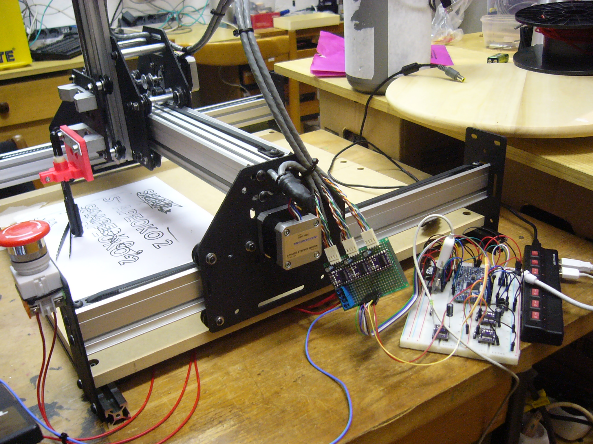
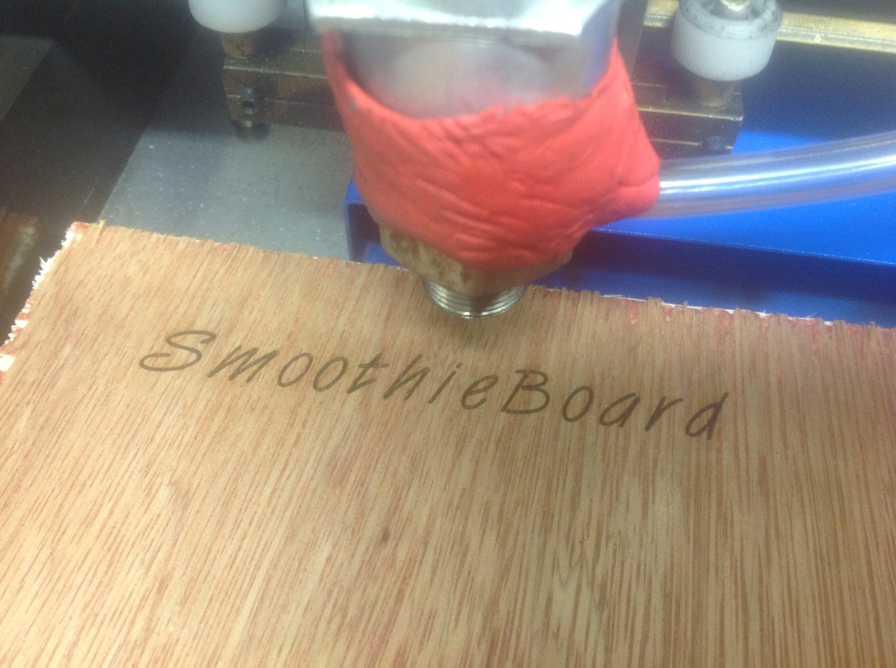

Laser engraving with LaserWeb and Smoothieboard, by Ariel Yahni, February 2016
Smoothieboard driving a plasma cutter, by Peter Van Der Walt, January 2016
Protovoltaics Pick and place machine with Smoothieboard, September 2015
Smoothieboard driving a seeding machine, seeder, April 2015
Smoothieboard driving a chinese laser cutter, February 2015
Smoothieboard driving a 400W AC Servomotor by Bouni, January 2015


SmoothieBox ( Github ), by Laurent Le Goff, September 2014
Smoothieboard drawing on a H-bot, by Martin Bondéus, July 2014
Smoothieboard driving a Reprap Morgan with the new Scara arm solution, by Quentin Harley, July 2014
Smoothieboard on delta at high speed, by crunch, June 2014
Smoothieboard on delta drawing circles, after autocalibration, by Emmanuel Robert, June 2014
Smoothie doing dual extrusion on a delta by Gestalt73, May 2014 
Breadboard Smoothie on ShapeOko, by impure_hate, March 2014 
Smoothieboard laser cutting/engraving, by Jason Harper, March 2014 [ pictures ] [ video ]
Smoothieboard engraving PCBs, by Jim Morris, February 2014
Smoothieboard cutting Aluminium flywheel, by David Bozec, October 2013
Laser fun, by trimpot, June 2013
Sunbeam 2.0 ( smoothieboard-like board, running Smoothie ) first steps, Wulfnor, June 2013
Smoothieboard controlling un Up! 3D printer, thejollygrimreaper, June 2013
Feather robot beta, testing feather arm solution, jeffrey (Lobo CNC), May 2013
Everyday printing speeds with Smoothieboard, by Triffid_Hunter, May 2013
Beta touchprobe code results, powertomato, May 2013
Smoothieboard cutting aluminium on a 6040 router, Arthur, May 2013
«A smoothieboard in the wild», by Morbo, April 2013
Smoothieboard printing on a hbot-type printer, Wulfnor, March 2013
Smoothieboard running a hbot-type printer, Wulfnor, March 2013

Crowded Smoothie on a Breadboard setup by wolfmanjm, March 2013
Smoothieboard running a rostock-type printer, os1r1s, February 2013
Smoothieboard running a rostock-type printer, wolfmanjm, February 2013
SmoothieBoard printing on a Prusa by Wulfnor, February 2013
SmoothieBoard high speed test by Triffid_Hunter, January 2013
Smoothieboard on a Kossel, by merkur2k, January 2013
SmoothieBoard high speed test by Triffid_Hunter, January 2013
SmoothieBoard high speed test by Chris Cecil ( RoboSprout ), January 2013